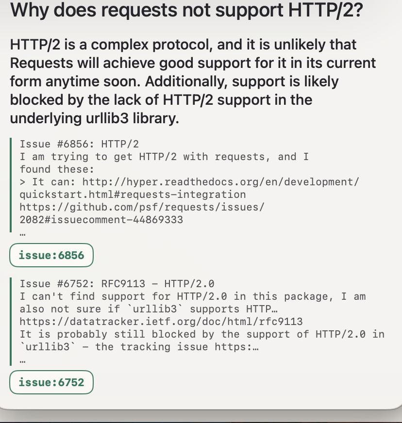
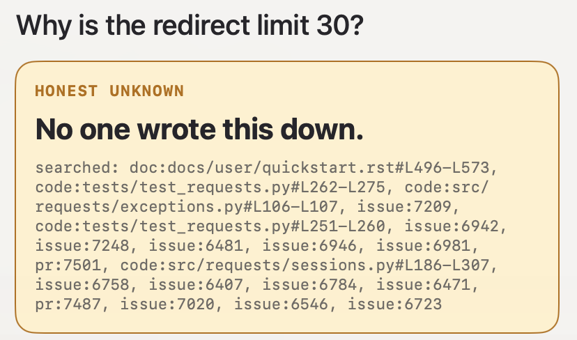

Icarus · macOS · alpha
Icarus reads your repository — the code, the pull requests, the issue threads — and answers questions about why things were built the way they were. Every answer shows the evidence it came from. When the reason was never written down, it says so instead of inventing one.
The part nobody else demos
Ask most assistants why a constant is set to a particular number and you will get a confident, plausible answer. You will not be told it was a guess. Icarus refuses instead — and the refusal is enforced by code, not by asking a model nicely.
A reason that was recorded

A reason that was never recorded

Sign in with GitHub and point Icarus at a repo. It indexes the source, the pull requests, and the issue discussions — 22 file types across ~17 languages.
Hold Right Option anywhere on your Mac and speak, or press ⌘⇧I to type. An overlay appears over whatever you were doing.
Icarus speaks a one-line summary and puts the quoted evidence on screen, linked to the exact lines on GitHub. Or it tells you nobody recorded a reason.
Stated plainly, because a tool that hides its limits is asking to be trusted rather than checked.
Icarus is not notarized by Apple — notarization requires a paid Developer ID this alpha does not have yet, so macOS cannot vouch for it. Rather than paper over that: both install paths are below, along with the checksum, so you can verify what you downloaded yourself.
Terminal — recommended
curl -fsSLO https://raw.githubusercontent.com/alankritxghosh/Icarus-Website/main/install.sh less install.sh # 80 lines, half of them comments — read it sh install.sh
Or with Homebrew
brew install --cask alankritxghosh/icarus/icarus xattr -dr com.apple.quarantine /Applications/Icarus.app
Or in one line, if you would rather
curl -fsSL https://raw.githubusercontent.com/alankritxghosh/Icarus-Website/main/install.sh | sh
Or the disk image, by hand
1. Download Icarus.dmg below and open it
2. Drag Icarus onto the Applications folder beside it
3. Open Icarus. macOS says it "cannot be opened because Apple
cannot check it for malicious software" — this is expected
4. System Settings → Privacy & Security, scroll down, then
click "Open Anyway" beside the Icarus message and confirm
After that first launch it opens normally. Microphone and speech permissions are requested the first time you hold the talk key; both can be declined and typed questions still work.
Stuck, or something behaved oddly? Email ayushghosh2015@gmail.com. This is an early beta — reports of what broke are genuinely useful.